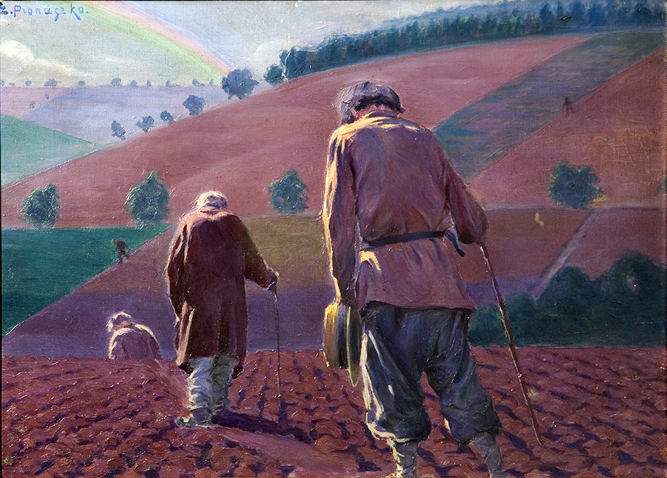
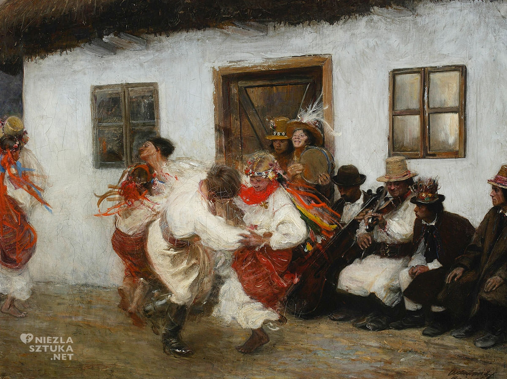

Arthur Schopenhauer - Schopenhaueryzm
-
Człowiek stawia sobie cele i kiedy je realizuje to wyznacza sobie kolejne, stąd też i biorą się jego cierpienia;
-
Mimo wszystko człowiek jako istota ludzka nie targa sie na swoje życie, gdyż ma on w sobie popęd życiowy;
Człowiek szuka ukojenia na różne sposoby, jednym z nich jest wyjazd w góry - Tytus Chałubiński wierzył w jego
właściwości lecznicze, przez co wiele zamożnych osób lub poetów w tamtych czasach często wybierało się tam szukać
natchnienia i ukojenia od cierpienia;
-
Innymi przykładami znalezenia sposobu na ukojenie bólu może być nirwana - czyli nic innego jak poddaniu się
buddyzmie. Bardzo powszechny był również mizoginizm, którym było przedmiotowe traktowanie kobiet.

Friedrich Nieztsche - nietzscheanizm
-
Stworzył on koncepcję nihinizmu, w której to wszystkie najwyższe wartości wyznawane przez człowieka, normy i wszelkie
przekonania religijne kompletnie straciły swój sens;
-
Prawdy na temat życia nie istnieją, są one w pełni indywidualne, nierozpoznawalne, nieprzewidywalne oraz całkowicie
zmienne.
-
Jego koncepcja zakładała, iż "Bóg umarł", a na jego miejscu człowiek powinien kierować się realizmem poznawczym,
który również zależny jest od punktu widzenia danego człowieka, więc każdy z nas będzie odbierał to osobiście.

Henri Bergson - bersgonizm
-
Wyznawał on idee czasu oraz intuicjonizm - według niego najwyższą wartość miała nauka, przeczucie i postrzeganie
świata na wiele różnych koncepcji. W 1927r. otrzymał on literacką nagrodę Nobla.
-
Jego znanymi dziełami jest "Wstęp do metafizyki" oraz "Ewolucja". W utworach tych opisał on tzw. popęd życiowy
(równoznaczny z pędem życiowym), który symbolizował wewnętrzne siły natury.